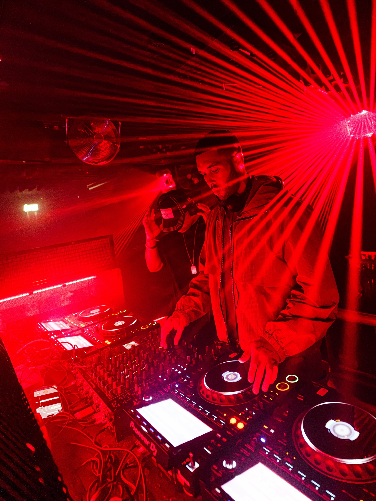

Soundcheck and the queue
Filming
Soundcheck in the empty room, the band backstage, the merch table, fans in old Morbid Angel shirts queuing outside in the December cold.
Goes out
A short "Cluj tonight" clip for your stories, before the doors open.
I'm Stefan, a videographer from Cluj, and I run Zoomout_crew. I'd like to film your show at FORM Space on 8 December, so the Cluj night ends up on your feed, not just on people's phones.
What I'd film on 08.12, from soundcheck to the last song.
Filming
Soundcheck in the empty room, the band backstage, the merch table, fans in old Morbid Angel shirts queuing outside in the December cold.
Goes out
A short "Cluj tonight" clip for your stories, before the doors open.

Filming
David Vincent and the band from the side of the stage, the pit from the barrier, the crowd shouting back the classics. Close-ups on hands, drums and faces, wide shots of the whole room.
Can include
Short clips with fans after the show: the first time they heard Altars of Madness, how far they travelled.

Delivered
A live reel of the Cluj show the next day, short clips of single songs for your socials over the next week, and band and crowd photos.
Why it matters
Fans in the next cities see what they're about to get.
My own work, closest to what you'd get. Tap a clip for sound.
Barbaro x Risqué at Ministry of Sound, London, filmed on my own and cut to the music. Same approach for your show, just louder.
The whole Ministry of Sound nightNico Ramírez at Ministry of Sound, followed from the street to the decks. This is what I'd do with the band, from the dressing room to the first song.
Another live set I filmed: Transylvania SunsetNot the perfect picture. The moment before it's gone.

If you want more than Cluj filmed, I can join you for a few nights in the region, so the tour gets one film from several cities.
Tell me which dates and I'll put together one price.
We agree beforehand which songs and moments matter, and what's off limits on stage. I send you every clip before it's posted, so you approve everything.
Audio: I record from the board if your engineer is OK with it, otherwise from the room.
You get full rights to use everything on your own channels.
Tell me what you'd want from the Cluj show and your budget, and I'll tell you how I'd do it.
Stefan Horus, videographer from Cluj. I run Zoomout_crew and film live music, artists and brands, in London, across the US and at home. I film on my own and edit everything to the music.
Ministry of Sound · Transylvania Sunset